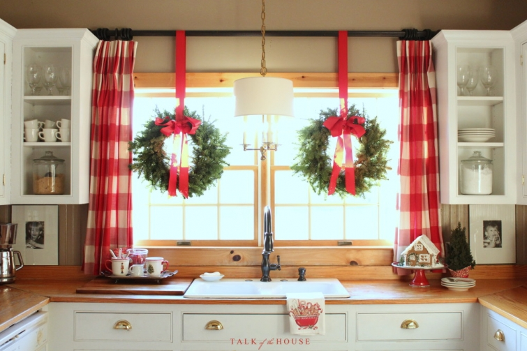

.png)
.PNG)
.PNG)
.PNG)
.PNG)
.PNG)
.JPG)
.JPG)
.PNG)
.PNG)


Happy Weekend to you! First things first today. I need to announce the winner of the Target gift card and the Christmas magazines. Random.org spit out number 245 for me, and that number belonged to this comment on the Christmas Joy post. 🙂
Congratulations to you Judy! I will be getting in touch with you today (unless you beat me to it.) 🙂
.jpg)
And now on to the holiday decorating! Where in the world have you been, Kelly? you might ask. Well I have been shopping and shopping and shopping…every. single. day. this. week. I am soooo excited that for the first time in 5 years ALL THREE of our children will be here for Christmas Eve and Christmas Day! So I want to have every little thing on my Elf List checked off before they arrive so that we can enjoy our time together without having to worry about to-do list items. (And the shopping IS almost complete. 🙂 )

But what about the decorating?
Nope, not there yet…but working on it.
And as you are looking at these photos, you might be saying,
This looks just like how it was decorated in the past.
Yes it does (except there are new Christmas cards in the Christmas card basket. 🙂 )
As a blogger, I know you as a reader like to see new ideas, and I do like to tweak things around here to hopefully improve them or make them “fresh.” When I started decorating the kitchen I wanted to go in a red and green direction this year for a change. I tried out some green items we owned in there, and it looked too much like spring and less like Christmas. So that plan was quickly abandoned. 🙁
While I have always thought that black was not a good color to use at Christmas, I did like the black quote cards on the little tree in my workroom. So I thought…hmmm..Let’s try some black and white in the kitchen.
I had purchased some gorgeous wide black and white checked ribbon over 10 years ago, (I do not know the source) and it was sitting in one of those boxes in my workroom. So I pulled it out, made bows, and hung the wreaths with them over the sink. Here is how it looked (and it is checked not striped as it looks in the photo.)
I would have loved to have left it like that for you so that you have a new idea for Christmas decorating, but it just did not look “Christmas-y” enough to me. I kept it up for a day. This morning, I changed out one of the bows to my old fashioned traditional red ones while the coffee was brewing. When my husband came in for breakfast, I asked him which one he liked better. The red he said with no hesitation. That sealed the deal.
They are all now red.
Ah much better. 🙂
For me, Christmas is a lot about traditions. As much as I like to change things, Christmas should have some constants. I think many family members expect that. For example, my side of the family likes to have a “finger foods” party and open gifts on Christmas Eve.
With our children coming home for Christmas, I want them to enjoy the house as it mostly was when they were young. Although the boys would probably say they really don’t care how it looks, our daughter will be expecting a string of lights and garland on her bedroom window. 🙂
I’ll be tweaking a few little things in our Christmas decor (like adding a bowl of tangerines because their scent brings back memories of my childhood.)
But our gingerbread houses are still going to be out in the kitchen and dining room.
And there will still be a tree and nativity on the back porch. But don’t worry, I do have a number of new things to show you, and I’ve got 10 short posts planned for you between now and Christmas. So I better get busy! Hope there is not a lot left for you to do on your Elf List.
Have a merry weekend!

Linking up with


.PNG)
This is just beautiful! i think I need you to come to my place and help decorate 🙂 Al the posts are lovely, just lovely!
Your kitchen looks so pretty and happy! I am actually using black, white and gold with my Christmas wrapping this year so I like your black ribbon….but maybe not as well as I like the red in your kitchen. I know you are so excited to have all three children home this year. It will be a special Christmas for you. Merry Christmas, Kelly.
Found you from the link up. Love all the Christmas decor you have throughout your home. The wreaths in the kitchen look great!
I love your kitchen! The curtains and wreaths on the windows are SO festive and cheery! Everything is really pretty 🙂
Kelly, your kitchen is PERFECT! I love every thoughtful detail. Thanks for sharing in the 12 Days of Christmas Tour of Homes party!
Love your Christmas kitchen! The wreaths in the windows are gorgeous and the red ribbon makes it that much more festive!
I just pinned a picture of your kitchen the other day. I love the wreaths on the window and I agree, the red ribbon is so amazing.
WOW- your kitchen is just the coziest and warmest christmas kitchen ever!!! i absolutely love everything you’ve done- and those window treatments!!!!
Your kitchen is just a darling! Love how you managed to add Christmas Prettiness to the space! Thank you for joining the 12 days of Christmas Tour Link Party!
I liked your quote cards so much on that tree–I went right to Target & found them. I’ve thought of so many uses for them, that they are STILL in the box! Love your decor…and how you make use of everyday things in some of the neatest nooks & crannies.
I’m like you; I enjoy tradition and am happy to repeat the same decorations year after year. In fact, I’m that way year-round. When I get a room like I like it, I can live with it for years.
I’m so happy all of your children will be home for Christmas; I know that will make this Christmas extra special!
Thanks so much for sharing and for the hard work you put into your lovely blog. Merry Christmas, Kelly!
Thank you for the Christmas ideas along with the dip recipe! Sounds delicious!
Hi Kelly! Your home looks like a Christmas heaven! I agree too about Christmas being a celebration made of traditions! It is just part of its charm 🙂
Love the red in your home! Enjoy your time with your family under one roof! That hasn’t happened in my home for a few years!
I always enjoy seeing your wonderful seasonal posts! Inspiration abounds…
I agree tradition is important at Christmas; we can tweak our decorations the rest of the year. Your kitchen looks great & and the red ribbon fits your home. How exciting that all 3 children will be home. I’m a mom of adult children so I know the feeling. Now we’ve added son-in-laws and granddaughters to our “family home for Christmas”. The merriest of Christmas to you & your family.
Your home always looks so warm and cozy! I agree with constants/traditions. Christmas in my house has to have some of the same things from year to year as my girls would be so disappointed if they weren’t and frankly, it makes me happy too! With life so full of changes, it gives us comfort to know some things don’t change!
Love, love, love your home and style of decorating, very inviting and cozy. I too love the color red and checks but couldn’t find a way to incorporate them in our home but gonna give it a try! I always look forward to your blog..the first one I have ever followed! May God bless you and your family!! Merry Christmas!
How beautiful and exciting your home feels…with your family soon to be home. Merry Christmas!
Mary Ann
Kelly,
I saw Holly Mathis in Chappell Hill yesterday and we both agreed your tablescapes are great inspirations. Isn’t it nice that you are in great health, getting ready for all three to come home instead of last year’s illness? Happy holy days!
Carol
Your home is beautiful no matter what you do. I tend to like traditional things at Christmas. I love my old shiny brite ornaments I am collecting, and I love all the ornaments my kids made me growing up! Our tree wouldn’t be the same without the painted pine cones and the tracings of little hands on their first Christmas! By the way, I am intimidated to comment more often because I always worry about my grammar and punctuation! Lol!🎄
—————————————————————–
Thank you Lynne. I think all of us here are fans of tradition. Please do not worry about punctuation and grammar! Girl, I have seen such mistakes in 33 years of teaching that nothing can compare to it!! I assure you, you are in good company. 🙂 (And I am the queen of incomplete sentences in my writing here…see, I just did it again! LOL
Kelly
I never grow tired of looking at your Christmas House! You inspire me to create and make my home warmer and cheerful for my family. I was getting concerned when your postings weren’t as regular as usual– but happy to know you were out preparing for a home coming for your children. So happy for you that they all get to come home and pray for travel mercies for them. The black bows were interesting but the red bows really show The Kelly Touch! Prayers and Peace and may we all seek the Prince of Peace during this Christmas Season.
I agree with your decorating mind set. Many bloggers post pictures of rooms totally transformed from year to year. Many times I think the new room doesn’t look as nice as it did the year prior. I can understand how they might feel the need to offer something new and different, but is that how we live? Christmas is a time for traditions, and who has the time or money to reinvent a new holiday decorating scheme year after year? Not to mention storing all this stuff! Like you, I have decorated my home very similarly as I did last year. Not saying I haven’t purchased anything new, but mostly it’s the same. Your home is beautiful and filled with inspiration!
Simply stunning! The kitchen’s warmth and festive color of red speaks Christmas and a place where family gathers and memories are made. Have a blessed holiday with your family.
———————————————————————-
Thank you so much Velia! It has its share of festive red, doesn’t it?! 🙂 I hope you and your family have a wonderful Christmas too.
Merry Christmas!
Kelly
I’m new to your blogs and I’m really enjoying them! Could you let us know where you got the mugs and plates? Thanks a lot and Merry Christmas!
————————————————————————-
Welcome Jane! I am so glad you found Talk of the House and that you are enjoying the posts. 🙂 The mugs and plates are a Christmas pattern from Williams Sonoma called Christmas Icons. They sold it back in 2010, but pieces and sets of mugs and plates are usually available on Ebay…which is where I purchased all of ours.
Kelly
Hi Kelly ~ I love the clean lines and graphic quality of your decorating and home style. I also like that your house is not cluttered with decor but has just enough to make it attractive and interesting. In addition, I admire that you haven’t found it necessary to install granite counter tops and stainless appliances in your kitchen. I like your wooden counters and white appliances. One more thing I always appreciate when I read and view your blog is that you do not have advertising pop-ups blocking the pictures and blinking ads distracting me in the sidebar. I don’t know if you might have addressed this issue in comments before ~ if so, I missed it but I appreciate not having the advertising that I find so annoying on other blogs. Maybe you have plans to initiate some advertising – I’m sure it must be tempting if it’s profitable. I’m not a blogger so I don’t know about these things. However, in the end, if you decide to institute some advertising, I will overlook it because I enjoy your blog so much! Oh, and I hope you are enjoying your first year of retirement from teaching. Merry Christmas, Kelly!
——————————————————————–
What a super lovely comment Leila Jane! Thank you for all the very kind compliments. 🙂 I hate those blinking pop up ads in blogs as well and hope to avoid them. I have added one sidebar ad (not a pop up) and will probably add more to help defray some of the costs of running this blog (host expenses, giveaway costs, etc.) Every little bit helps now that I am living on teacher’s retirement pay! LOL But I am glad to know you will continue reading if the annoying ads start to appear here. 🙂
Merry Christmas to you and happy Sunday!
Kelly
Can’t have enough red for Christmas! The kitchen is beautiful. And your children will definitely love being “home”. I know you will all enjoy being together. Haven’t even started except for some shopping. Sometimes life just gets involved. Our children will be home and the grandbaby too. And that is what really matters to me. Trying to get it all organized this weekend. Can you believe we are 13 days to Christmas?
———————————————————————
I so agree about the red for Christmas! Thank you for the compliment on the kitchen. I know what you mean about life getting involved. I feel like I am moving at a snail’s pace getting things done because so many other things come up. I hope you are making good progress this weekend Peggy. Christmas will be here before we know it!
Kelly
Kelly, I am so happy your family will all be there. Mine were last year and it was wonderful. It is funny…I was trying some new things this year and it didn’t look right. The traditions are great and blog land shouldn’t make us feel the need to change what works. Your home is so beautiful and I love the red. I am looking forward to your posts.
I just love your kitchen at Christmas. I love tradition. Some things just should not change. Over Thanksgiving, my niece told me that she loves having the Holidays at our house. She said “everything is always the same” and it fills her with comfort and contentment. Can’t ask for more than that. Merry Christmas Kelly! Thanks for another great year.
Love the gingerbread house on the cake stand!!!! I also love your kitchen curtains but what caught my eye and made me smile was your copy of Life Beautiful magazine. One of my favorite things!!! Merry Christmas and God bless you and yours!!!
———————————————————————-
Thank you for all your compliments Linda! Isn’t Life Beautiful wonderful?! I had not seen it in over a year and thought it was out of publication. Then lo and behold I found it in the magazines at Walmart. I grabbed that baby up as fast as I could! The photography in it alone is worth the price. It is a beautiful periodical.
Merry Christmas to you too!
Kelly
This is my first time to your blog and I am now officially in LOVE with your kitchen!! The white cabinets! Wood floors!! Red checked curtains!! It’s all too perfect!!!!! I can’t wait to browse around some more….Merry Christmas to you!
———————————————————————-
Thank you Debbie! I am so glad you found your way over to the blog! Please visit again soon. Merry Christmas to you!
Kelly
i love your house all the time, but your Christmas photos in previous years have really inspired me to decorate more simply, but with lots of red. This year I’ve gotten it just right. White slipcovers sofas with red and white pillows, lots of fuzzy white throws, and a whole shelf on my white bookcases of my girls’ Santa photos. This year they will both be home and I think it may be the last time it’s just the four of us so I am going all-out on the baking and decorating this year. I’ve got the shopping done, and will wrap and bake this coming week so I can spend as much relaxed time as possible with them. Merry Christmas to you!
———————————————————————–
I’m so glad there have been ideas here that you can use Nancy! Your Christmas decorating sounds beautiful. 🙂 Your time management plan sounds a lot like mine. Hope you have a wonderful Christmas with your family!
Kelly
Love love love the red! To me it’s just not Christmas without a generous supply of red. Merry Christmas to you and yours.
———————————————————————–
I so agree Marie, and there is certainly MORE than a generous supply of red around here!
Merry Christmas to you too!
Kelly
Beautiful!
Tell me about the gingerbread house
Where can I buy one.
Kelly, everything looks charming, and I am so glad you are healthy and able to check off those to-do items this year! And how wonderful to have all three at home this year. Looking forward to your 10 posts!
Your husbands right! Definitely the red ribbons!! 🙂 I did like the black … quite modern, but as soon as I saw the red the wreaths looked so much more festive. I think I just like traditional colours and styles at Christmas, as I guess you do. A tree with lots of individual ornaments bought each year and each with its own memory rather than a stylish colour coordinated one. Although I do think these look beautiful in certain settings. I’ve missed reading your replies to the comments here and I’m glad it’s because you’re busy shopping shopping!!! Not because you’re unwell. I can imagine how happy you are to have all your family home for Christmas. My children will be home too … I’m definitely at my happiest when we re all together and a dusting of snow would be nice!
Take care … hope you’re having a good weekend.
Rosemary
Everything is just beautiful! Red ribbons definitely the winner. Where did you get the darling red trimmed plates in the plate rack? Super cute. You do such a nice job. Totally enjoyed your office a couple days ago.
Hi Kelly, Your kitchen is beautiful. As much as I love black and white, your husband is right about the red. I’m looking forward to those posts between now and Christmas but be sure and enjoy your family time as much as possible!
Kelly,
I love your kitchen your traditional red way. I spy a super cute candy cane tea towel on your sink that maybe new…? I appreciate keeping up with traditions while adding in new ones so keep doing what your doing and I am a happy girl. My list is getting checked off ever so slowly as the days go by. Thanks for sharing. Take care.
Love your kitchen…so warm and welcoming. Can you share the source of your Christmas plates in the plate rack? We need to begin a set for a young grandchild…our fourth! Each of the older three has a set of eight Christmas dessert plates. Love that they eat Chrsitmas dessert on one of “their” plates each year at our home.
———————————————————————-
The dishes are the Christmas icons pattern from 2010 at Williams Sonoma. I purchased all of our pieces from Ebay, and they usually have a couple of sets for sale every now and then. Just watch there. I love your idea for your grandchildren!
Kelly
I love your Christmas kitchen!! 🙂 The black was pretty, but I agree that the red was more “Christmasy.” 😉 I love that you used things that reminded you of your childhood. Love tradition! I used red and white in my kitchen too. I need to add a wreath or swag on my window though. I know you are beyond excited for your children to be home. Now, go start wrapping all those gifts!! 😉
I will gladly look at your “traditional” choices for decorating over and over. It says, “There’s no place like home for Christmas!” I love your kitchen, and have since the first time I saw it decorated for Christmas..especially your gingerbread houses. I still have shopping to do. My last room to decorate is the kitchen. I hope to have that done tonight. I will be looking forward to seeing the rest of your decorating!
Sherry
Came to see your kitchen, via Brenda. It’s darling !: )
Looks great, Kelly! I was just at Target and I bought wrapping paper that’s black and white with some red. I love it but I admit that using black at Christmas does feel a bit strange.
I love your Christmasy kitchen!!! Every inch is wonderful.
Everything is just beautiful and looks like Christmas…..now go enjoy your time with your wonderful family! Hope you all have a Merry Christmas and the happiest of New Years!
The kitchen looks fantastic Kelly! I have to admit that I like both the black and white AND red ribbons on your wreaths. But I totally get what you’re saying about tradition. I think the world of blogging has made us believe that we need to be doing something new and different all the time. I like to tweak here and there but there are some things that will always remain constant….especially at Christmas time.I hope you have a wonderful Christmas with your family!
Kelly, I love the red and black ribbon…maybe you can use it in the New Year. Like you, there are some things that just say Christmas. BTW, I stole your idea of candy canes in my Santa Mug. It was pining away in the cabinet..now he is happy!lol
So happy to see the red is back in the kitchen! I did like the black ribbon….but I think you’re right…red says Christmas! There are certain things that never change from year to year as far as Christmas decorations are concerned. My kids like it that way. We will be one short this year for Christmas, but we had them all last year, and it was really fun! Here’s hoping your holiday will be everything you and your family are hoping for this year! 😉
Kelly,
I agree wholeheartedly, tradition is important and I love your home decorated for Christmas, even if I’ve seen a few of the items before. How exciting for you and your family to all be together this year. Having just experienced that at Thanksgiving, it’s the best! When my head hits the pillow each night I am content that everyone is under one roof again, even the new additions (wives/granddaughters).
I wish you a very Happy Christmas. I’m so happy I can call you my blog friend. 🙂
xo,
Karen
Hi Kelly. Happy to see a post and can only imagine how excited you must be knowing all your children will be with you for Christmas! I love your house with the red – it’s perfect. Have a great week.
———————————————————————
Yes, we are VERY excited that they will all be here. Just hope the weather cooperates for them all, and that their flights don’t get delayed. Thank you for the compliment on the house. We certainly have a lot of red here! Hope you have a great week as well. 🙂
Kelly
Definitely the red ribbon…Love seeing your Christmas kitchen! Enjoy the time with your family this Christmas!
Cheers!
Shelley
———————————————————————
Glad to know I am not just “stuck in a rut” Shelley. 🙂 The black and white actually looked better in person than it did in the photograph, but it just didn’t look like “Christmas” to me. We will enjoy our time with our kids! Can’t believe our son in Connecticut will not have had snow by the time he gets here!
Kelly
You just cannot go wrong with red at Christmastime! I love your kitchen any time of the year. Where did you get that red cake stand?
Brenda
———————————————————————-
I agree! Thank you for your kind words about our kitchen, Brenda. The red cake stand came from Hobby Lobby about 3 or 4 years ago, and I have not seen another one like it since. If it had the manufacturer’s name on the bottom, I would let you know that, but I am afraid it does not. 🙁
Kelly